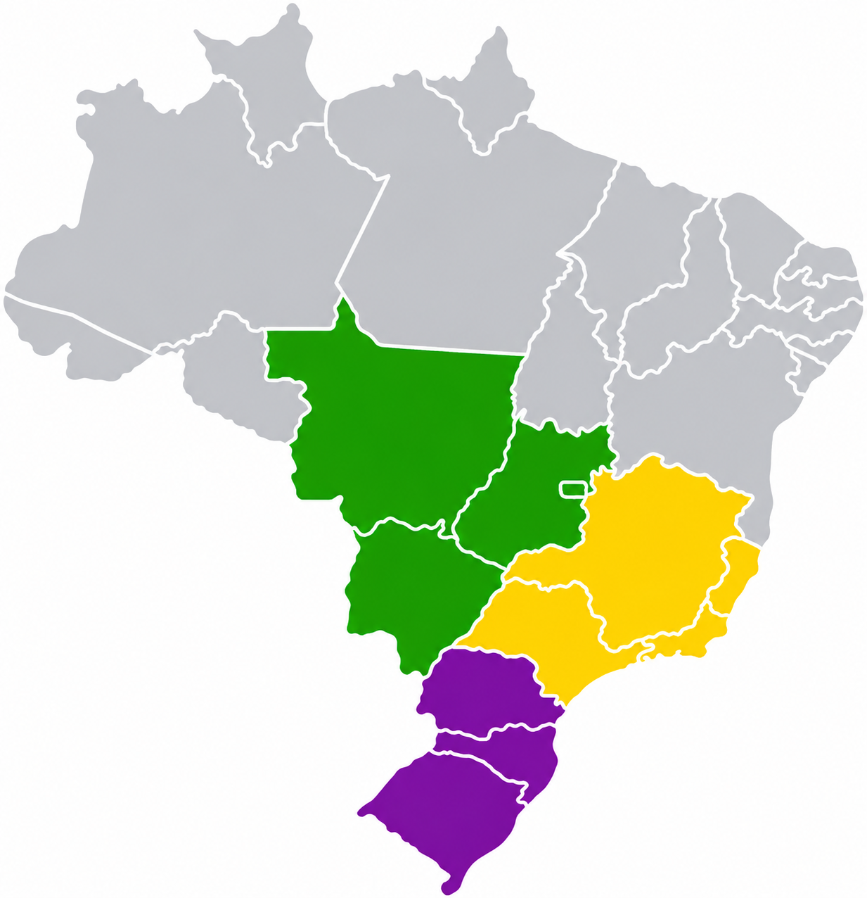

Midwest, Southeast and South Regions of Brasil
The Midwest and Southeast regions of Brasil are known for their breathtaking natural landscapes, bustling cities, historical landmarks, and diverse cultural traditions.
The South region of Brasil is known for its European cultural influences, cooler climate, stunning mountain landscapes, rich culinary traditions and the stunning Iguazu Falls.
Midwest Region
- Mato Grosso
- Mato Grosso do Sul
- Goiás
- Distrito Federal

Southeast Region
- São Paulo
- Rio de Janeiro
- Minas Gerais
- Espírito Santo
South Region
- Paraná
- Santa Catarina
- Rio Grande do Sul